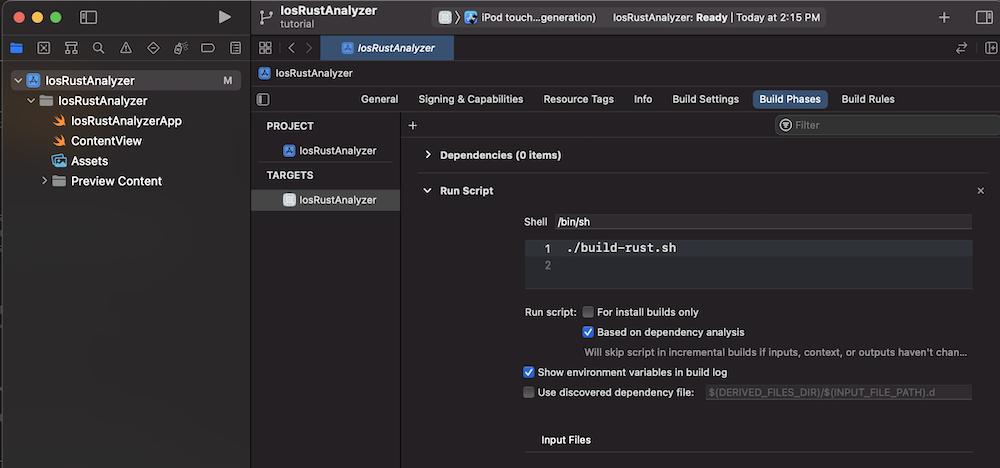

swift-bridge
swift-bridge generates bindings for calling Rust from Swift and vice versa.
Work In Progress
The swift-bridge book is a work-in-progress with many chapter either sparse or empty.
We've love your help in improving it!
Here's how you can contribute to the book even if you don't know much about swift-bridge.
-
You came to the book in order to figure out how to do something or get an answer to a question.
-
The book did not have a section that answered your question or pointed you in the right direction.
-
Open a pull request where you fill out a new or existing section with questions that you have.
-
A maintainer will answer your questions in the pull request comments.
-
Using your newfound understanding, replace your questions with text that answers them.
-
Pull request merged!
The Bridge Module
TODO: Introduce the bridge module chapter. Give an overview of bride modules.
Then sub chapters can go into details on the different sections of the module.
#![allow(unused)] fn main() { #[swift_bridge::bridge] mod ffi { // ... add some example items in here ... // a struct, an enum, a Rust extern, a Swift extern } }
Structs
TODO: Write this chapter
- Make a section about the available attributes
-
Talk about the
swift_repr = "..."attribute and when to usestructvs.class. -
Talk about
rust_into = ...attribute. Gets used when going from Swift -> FFI boundary -> Rust function. -
Talk about
swift_name = ...attribute
-
extern "Rust"
extern "Rust sections are used to expose Rust types and functions over FFI so that they can used from Swift code.
#![allow(unused)] fn main() { mod science; use science::{ScienceLab, Hydrogen, Oxygen, make_water}; #[swift_bridge::bridge] mod ffi { extern "Rust" { type Water; #[swift_bridge(associated_to = "Water")] fn new() -> Water; fn is_wet(&self) -> bool; } extern "Rust" { type ScienceLab; type Hydrogen; type Oxygen; fn make_water( lab: &ScienceLab, hydrogen: Hydrogen, oxygen: Oxygen ) -> Water; } } pub struct Water; impl Water { fn new () -> Self { Water } fn is_wet(&self) -> bool { unreachable!("Seriously...?") } } }
Owned, Ref and RefMut
When you define a type in an extern "Rust" block, three corresponding Swift classes get generated.
// Equivalent to `MyType` in Rust
class MyType: MyTypeRefMut {
// ...
}
// Equivalent to `&mut MyType` in Rust
class MyTypeRefMut: MyTypeRef {
// ...
}
// Equivalent to `&MyType` in Rust
class MyTypeRef {
// ...
}
Here's an example of how &Type and &mut Type are enforced:
#![allow(unused)] fn main() { // Rust extern "Rust" { type SomeType; #[swift_bridge(init)] fn new() -> SomeType; // Callable by SomeType, SomeTypeRef and SomeTypeRefMut. fn (&self) everyone(); // Callable by SomeType, and SomeTypeRefMut. fn (&mut self) only_owned_and_ref_mut(); // Only callable by SomeType. fn (self) only_owned(); } extern "Rust" { fn make_ref() -> &'static SomeType; fn make_ref_mut() -> &'static mut SomeType; } }
// Swift
func methods() {
let someType: SomeType = SomeType()
let someTypeRef: SomeTypeRef = make_ref()
let someTypeRefMut: SomeTypeRefMut = make_ref_mut()
someType.everyone()
someType.only_owned_and_ref_mut()
someType.only_owned()
someTypeRefMut.everyone()
someTypeRefMut.only_owned_and_ref_mut()
someTypeRef.everyone()
}
func functions() {
let someType: SomeType = SomeType()
let someTypeRef: SomeTypeRef = make_ref()
let someTypeRefMut: SomeTypeRefMut = make_ref_mut()
takeReference(someType)
takeReference(someTypeRef)
takeReference(someTypeRefMut)
}
// Can be called with SomeType, SomeTypeRef and SomeTypeRefMut
func useSomeType(someType: SomeTypeRef) {
// ...
}
Function Attributes
#[swift_bridge(rust_name = "function_name")]
Use the given rust_name to find the function's implementation.
#![allow(unused)] fn main() { use some_other_crate::Uuid; #[swift_bridge::bridge] mod ffi { extern "Rust" { #[swift_bridge(rust_name = "another_function")] fn some_function(); } } fn another_function() { } }
#[swift_bridge(into_return_type)]
Allows a swift-bridge definition of fn foo() -> T to work for any fn foo() -> impl Into<T>.
#![allow(unused)] fn main() { use some_other_crate::Uuid; #[swift_bridge::bridge] mod ffi { struct FfiUuid { uuid: [u8; 16] } extern "Rust" { #[swift_bridge(into_return_type)] fn make_uuid() -> FfiUuid; } } impl From<Uuid> for ffi::FFiUuid { fn from(uuid: Uuid) -> ffi::FfiUuid { unsafe { std::mem::transmute(uuid) } } } mod some_other_crate { pub struct Uuid { uuid: [u8; 16] } // Here we can return a Uuid, even though swift-bridge is expecting an FfiUuid. pub fn make_uuid() -> Uuid { Uuid::new_v4() } } }
Built In Types
On top of allowing you to define custom types to share across Rust and Swift,
swift-bridge comes with built in bindings for many Rust and Swift standard library types.
Option <---> Optional
Rust's Option is seen on the Swift side as a Swift Optional.
Example
#![allow(unused)] fn main() { // Rust #[swift_bridge::bridge] mod ffi { extern "Rust" { fn make_rust_option() -> Option<u8>; } extern "Swift" { fn make_swift_optional() -> Option<bool>; } } fn make_rust_option() -> Option<u8> { if ffi::make_swift_optional == Some(true) { Some(111) } else { None } } }
// Swift
func call_rust_and_divide_by_2() -> Optional<UInt8> {
if case let val? = make_rust_option() {
return val / 2
} else {
nil
}
}
func make_swift_optional() -> Bool? {
true
}
Vec <--> RustVec
Rust's std::vec::Vec is seen on the Swift side as a RustVec.
RustVec implements Swift's IteratorProtocol, allowing you do do things like:
let vec: RustVec = get_rust_vec_somehow()
for value in vec {
print(value)
}
Example
#![allow(unused)] fn main() { // Rust #[swift_bridge::bridge] mod ffi { extern "Rust" { fn make_rust_vec() -> Vec<u32>; fn make_rust_vec_with_initial_contents(initial: &[i16]) -> Vec<i16>; } } fn make_rust_vec() -> Vec<u32> { vec![5, 8, 11] } fn make_rust_vec_with_initial_contents(initial: &[16]) -> Vec<u16> { intial.to_vec() } }
// In Swift
func testMakeAVec () {
let vec: RustVec = get_vec_from_rust()
XCTAssertEqual(vec.pop(), 5)
XCTAssertEqual(vec.pop(), 8)
XCTAssertEqual(vec.pop(), 11)
XCTAssertEqual(vec.pop(), nil)
vec.push(50)
vec.push(75)
XCTAssertEqual(vec.get(1), 75)
}
func testMakeAnotherVec () {
let initial: [Int16] = [3, 5, 7]
let vec: RustVec = get_vec_from_rust(initial.toUnsafeBufferPointer())
XCTAssertEqual(vec.len(), 3);
for (index, value) in vec.enumerate() {
XCTAssertEqual(value, initial[index])
}
}
String <---> String
Rust's std::string::String can be passed to Swift as an owned String, a referenced &String or
a mutably referenced &mut String.
#![allow(unused)] fn main() { #[swift_bridge::bridge] mod ffi { extern "Rust" { type SomeRustType; // Becomes a `RustString` when passed to Swift. fn make_string() -> String; // Becomes a `RustStringRef` when passed to Swift. fn make_ref_string(&self) -> &String; // Becomes a `RustStringRefMut` when passed to Swift. fn make_ref_mut_string(&mut self) -> &mut String; // Swift calls this with a `RustString` and // Rust receives a `std::string::String`. fn take_string(string: String); } extern "Swift" { type SomeSwiftType; // Swift returns a `RustString` and // Rust receives a `std::string::String`. fn make_string() -> String; } } }
Tutorial: Running rust-analyzer on an iPhone
The tutorial is a work in progress. You can follow it and it works, but it's currently sparse on details and explanations.
In this chapter we'll create a new iOS application that makes use of swift-bridge in order
use rust-analyzer to perform syntax highlighting of Rust code.
When we're done we'll have a simple application where we can type Rust code into a text area and see the syntax highlighted version below it.

Project Setup
Create a new project.
cargo new --lib ios-rust-analyzer
cd ios-rust-analyzer
Install cargo-lipo.
cargo install -f cargo-lipo
Create a new Xcode project within the ios-rust-analyzer directory.
Xxode > File > New Project > iOS > App
We'll name it IosRustAnalyzer.


Your directory should now look something like:
$ tree -L 2
.
├── Cargo.toml
├── IosRustAnalyzer
│ ├── IosRustAnalyzer
│ └── IosRustAnalyzer.xcodeproj
└── src
└── lib.rs
Create a bash script that we can use to build the application
touch IosRustAnalyzer/build-rust.sh
chmod +x IosRustAnalyzer/build-rust.sh
#!/bin/bash
##################################################
# We call this from an Xcode run script.
##################################################
set -e
if [[ -z "$PROJECT_DIR" ]]; then
echo "Must provide PROJECT_DIR environment variable set to the Xcode project directory." 1>&2
exit 1
fi
cd $PROJECT_DIR
export PATH="$HOME/.cargo/bin:$PATH"
export SWIFT_BRIDGE_OUT_DIR="${PROJECT_DIR}/Generated"
# Without this we can't compile on MacOS Big Sur
# https://github.com/TimNN/cargo-lipo/issues/41#issuecomment-774793892
if [[ -n "${DEVELOPER_SDK_DIR:-}" ]]; then
export LIBRARY_PATH="${DEVELOPER_SDK_DIR}/MacOSX.sdk/usr/lib:${LIBRARY_PATH:-}"
fi
# if [ $ENABLE_PREVIEWS == "NO" ]; then
if [[ $CONFIGURATION == "Release" ]]; then
echo "BUIlDING FOR RELEASE"
cargo lipo --release --manifest-path ../Cargo.toml
else
echo "BUIlDING FOR DEBUG"
cargo lipo --manifest-path ../Cargo.toml
fi
# else
# echo "Skipping the script because of preview mode"
# fi
Create a new build phase that calls ./build-rust.sh — the bash script that we created.
Be sure to drag it before the Compile Sources step.



Create a directory Generated where our generated Swift and C code will go.
mkdir IosRustAnalyzer/Generated
touch IosRustAnalyzer/Generated/.gitignore
Give IosRustAnalyzer/Generated/.gitignore the following contents:
# IosRustAnalyzer/Generated/.gitignore
*
!.gitignore
Create a new bridging header and name it BridgingHeader.h.

Give it these contents:
#ifndef BridgingHeader_h
#define BridgingHeader_h
#include "Generated/SwiftBridgeCore.h"
#include "Generated/ios-rust-analyzer/ios-rust-analyzer.h"
#endif
Set the bridging header to $(PROJECT_DIR)/BridgingHeader.h

In the Cargo.toml, set the crate-type and build script.
[package]
name = "ios-rust-analyzer"
version = "0.1.0"
edition = "2021"
build = "build.rs"
[build-dependencies]
swift-bridge-build = "0.1"
[lib]
crate-type = ["staticlib"]
[dependencies]
swift-bridge = "0.1"
ide = {git = "https://github.com/rust-analyzer/rust-analyzer"}
Create our build script.
touch build.rs
// In build.rs fn main() { // TODO... }
Build the Cargo project once so that we can generate the files that we'll be linking to.
PROJECT_DIR="${PWD}/IosRustAnalyzer" ./IosRustAnalyzer/build-rust.sh
Set the Debug library search path to $(PROJECT_DIR)/../target/universal/debug, and the Release library
search path to $(PROJECT_DIR)/../target/universal/release

Go to IosRustAnalyzer > General > Frameworks, Libraries, and Embedded Content > + to add and click Add Other > Add Files.
Select the target/universal/debug/libios_rust_analyzer.a file.


Select the same target/universal/debug/libios_rust_analyzer.a in the link binaries with libraries build phase.

Add the following to the build.rs file that we created earlier.
fn main() { let out_dir = "IosRustAnalyzer/Generated"; let bridges = vec!["src/lib.rs"]; for path in &bridges { println!("cargo:rerun-if-changed={}", path); } swift_bridge_build::parse_bridges(bridges) .write_all_concatenated(out_dir, env!("CARGO_PKG_NAME")); }
Build again so that we can genrate the files that we're including from BridgingHeader.h.
PROJECT_DIR="${PWD}/IosRustAnalyzer" ./IosRustAnalyzer/build-rust.sh
Right click on IosRustAnalyzer and click Add Files To IosRustAnalyzer. Add the entire Generated directory.


Pressing the Run button should now open up the iOS simulator with Xcode's default "Hello World" iOS app.

Rust
Now that we've set up our project, it's time to write some code!
Add the following to src/lib.rs.
#![allow(unused)] fn main() { #[swift_bridge::bridge] mod ffi { extern "Rust" { type RustApp; #[swift_bridge(init)] fn new() -> RustApp; fn generate_html(&self, rust_code: &str) -> String; } } pub struct RustApp {} impl RustApp { fn new() -> Self { RustApp {} } fn generate_html(&self, rust_code: &str) -> String { let (analysis, file_id) = ide::Analysis::from_single_file(rust_code.to_string()); analysis .highlight_as_html(file_id, true) .unwrap_or("Error".to_string()) } } }
Swift
Add the following to IosRustAnalyzerApp.swift
import SwiftUI
@main
struct IosRustAnalyzerApp: App {
var body: some Scene {
WindowGroup {
ContentView()
.environmentObject(RustAppWrapper(rust: RustApp()))
}
}
}
class RustAppWrapper: ObservableObject {
var rust: RustApp
init (rust: RustApp) {
self.rust = rust
}
}
Add the following to ContentView.swift
import SwiftUI
import WebKit
import Combine
struct ContentView: View {
@EnvironmentObject var rustApp: RustAppWrapper
@State private var rustSource = initialSource
@State private var rustHtml = ""
var body: some View {
VStack {
TextEditor(text: $rustSource)
.font(.caption)
.onReceive(Just(rustSource), perform: {sourceCode in
let html = rustApp.rust.generate_html(sourceCode).toString()
rustHtml = html
})
WebView(text: $rustHtml)
.frame(minWidth: 0, maxWidth: .infinity, minHeight: 0, maxHeight: .infinity)
}
}
}
struct WebView: UIViewRepresentable {
@Binding var text: String
func makeUIView(context: Context) -> WKWebView {
return WKWebView()
}
func updateUIView(_ uiView: WKWebView, context: Context) {
uiView.loadHTMLString(text, baseURL: nil)
}
}
let initialSource = """
fn main () {
let stack: Stack<u8> = Stack::default();
for val in 0..100 {
stack.push(val);
}
}
#[derive(Default)]
struct Stack<T>(Vec<T>);
impl<T> Stack<T> {
fn push(&mut self, val: T) {
self.0.push(val);
}
fn pop(&mut self) -> Option<T> {
self.0.pop()
}
}
"""
struct ContentView_Previews: PreviewProvider {
static var previews: some View {
ContentView()
.environmentObject(RustAppWrapper(rust: RustApp()))
}
}
Make sure that you see 4 files in your Compile Sources build phase.

Runing the application in the iPhone simulator using Cmd + R should show a working demo!
Design of swift-bridge
This chapter explores how swift-bridge works internally.
Code Generation
-
Talk about Rust token stream generation
-
Talk about Swift codegen
-
Talk about C header codegen
-
Talk about how we test codegen